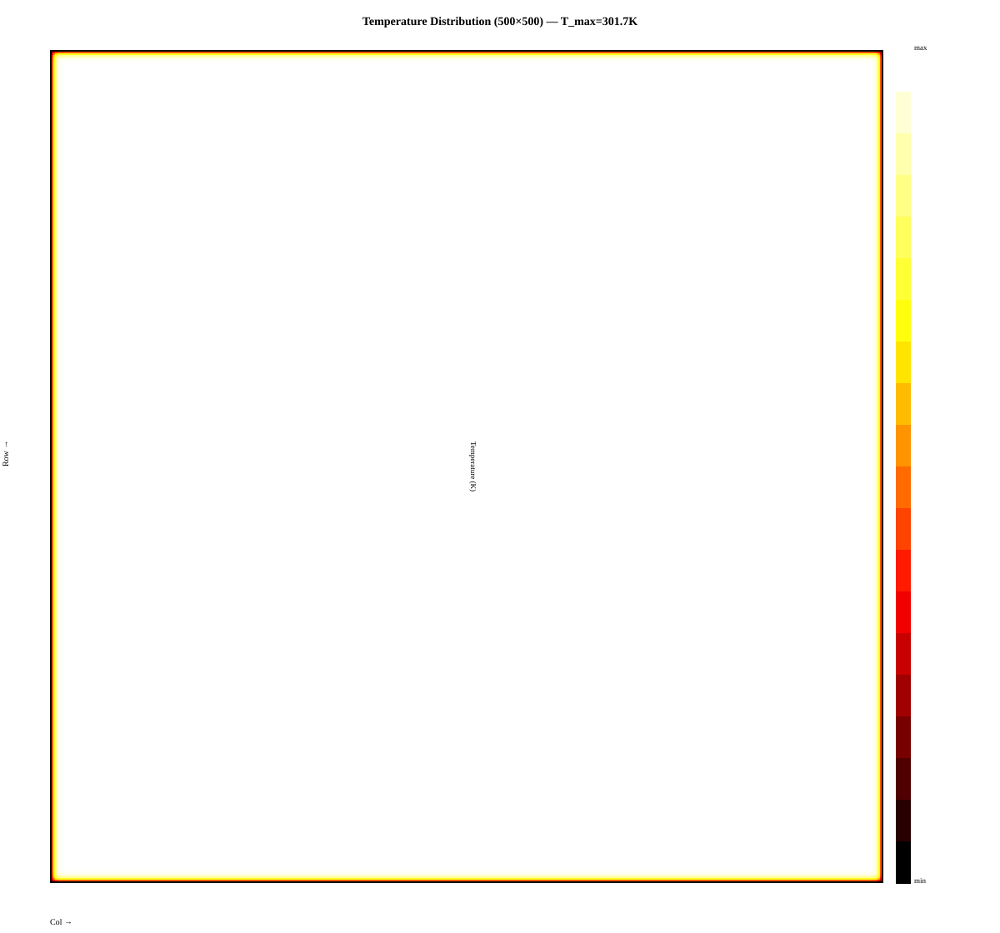
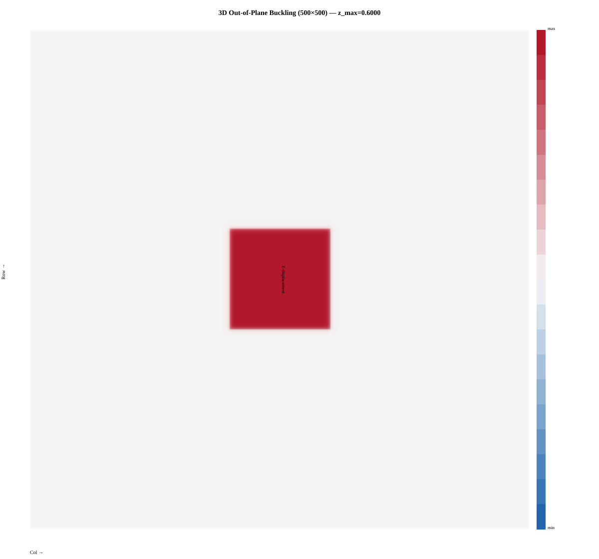
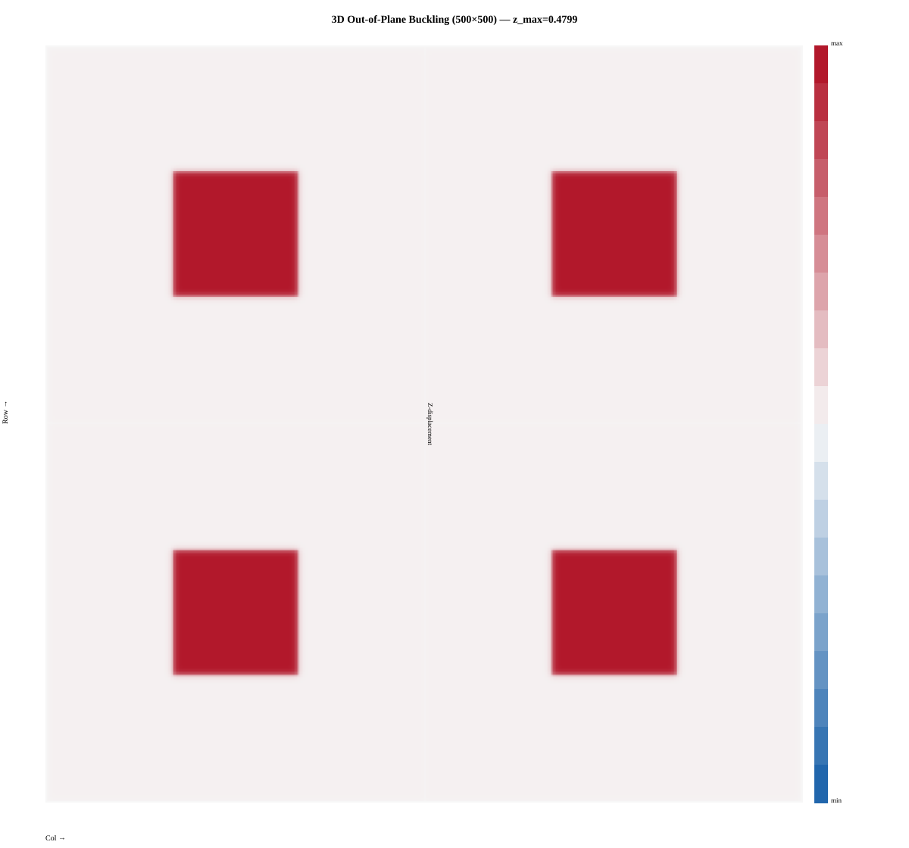

This milestone describes a C++/OpenMP simulator of
thermal diffusion coupled to out-of-plane deformation
(vertical warping) on a structured processor floorplan mesh. Each timestep applies an
explicit thermal update with 3D distance-dependent conductance
(kij = min(ki,kj) / dist3D),
then updates each cell's z coordinate from thermal expansion so geometry feeds
back into the next step. The implementation uses a
race-free double-buffered temperature update, static and dynamic OpenMP
loop scheduling, and a CLI for threads, mesh size, timestep count, floorplan pattern,
and optional field dumps and timing output. We measure strong scaling
and produce heatmaps and speedup plots from scripted sweeps.
Preliminary Results
All results below are from a development machine (3-run averages, 100×100 mesh, 200 timesteps, static scheduling). The full GHC sweep (500×500, 1–16 threads) is scheduled for April 22–24.
Correctness Validation
Uniform Pattern — Baseline Fields
With uniform power and material properties, temperature stays near ambient and z displacement is nearly flat — a sanity check before introducing hotspot gradients.


Hotspot-1 — Central Plume
A single central ALU cluster with 5× power creates a Gaussian-like thermal plume. The corresponding z-displacement map shows a dome-like buckle above the hotspot — the first cells to rise above the chip plane, changing their conductance to neighbors in subsequent steps.


Hotspot-4 — Multicore Floorplan
Four ALU clusters at quadrant centers with interconnect corridors between them model a realistic multicore chip layout. Temperature plumes from each quadrant merge along the interconnect strips; the z-displacement map shows four raised regions corresponding to each hotspot.


Strong Scaling (100×100, 200 steps, static)
| Threads | Pattern | Avg time (ms) | Speedup | Efficiency |
|---|---|---|---|---|
| 1 | Uniform | 35.32 | 1.00× | 100% |
| 2 | Uniform | 14.33 | 2.46× | ~99% |
| 4 | Uniform | 7.50 | 4.71× | ~95% |
| 8 | Uniform | 4.36 | 8.09× | ~81% |
| 1 | Hotspot-1 | 27.92 | 1.00× | 100% |
| 2 | Hotspot-1 | 14.39 | 1.94× | 97% |
| 4 | Hotspot-1 | 7.56 | 3.69× | 92% |
| 8 | Hotspot-1 | 4.54 | 6.16× | 77% |